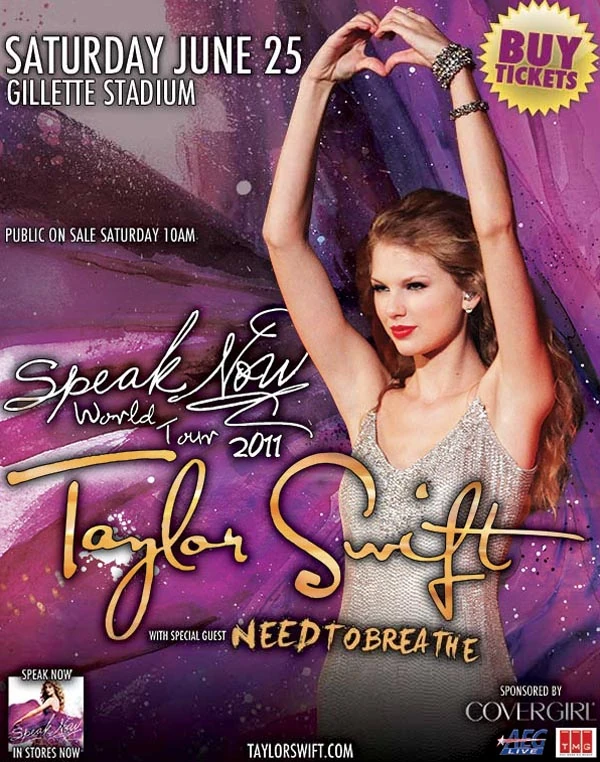
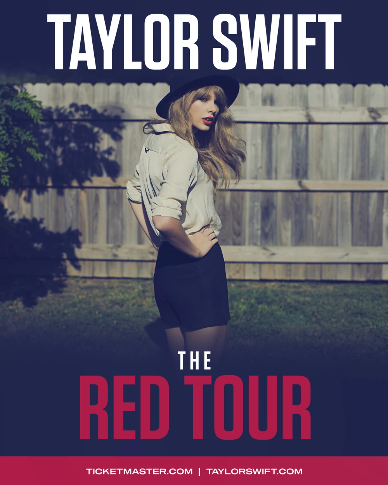
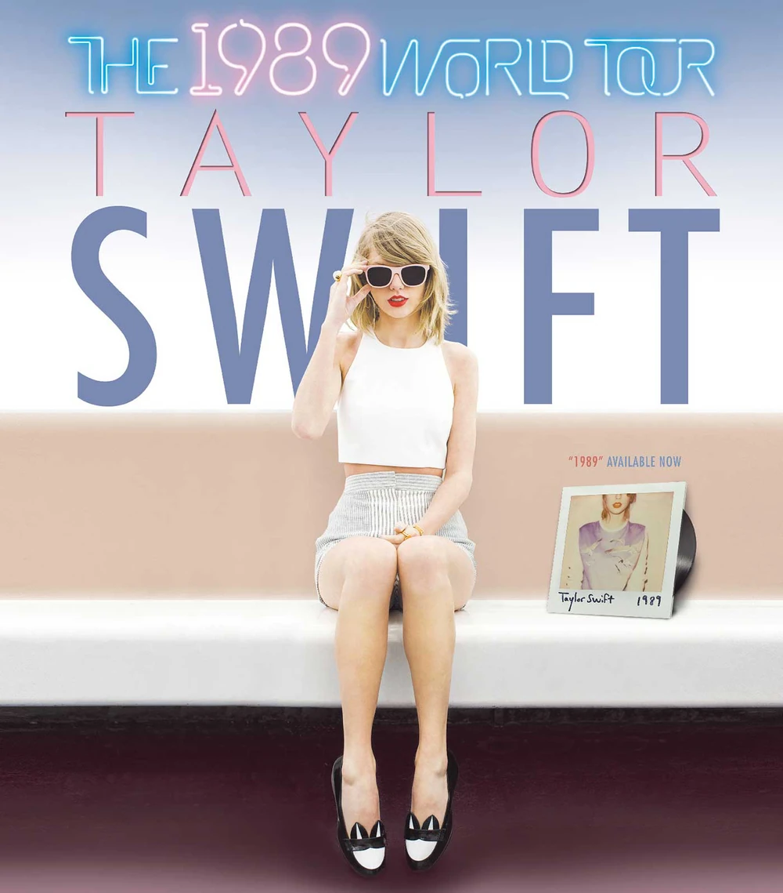
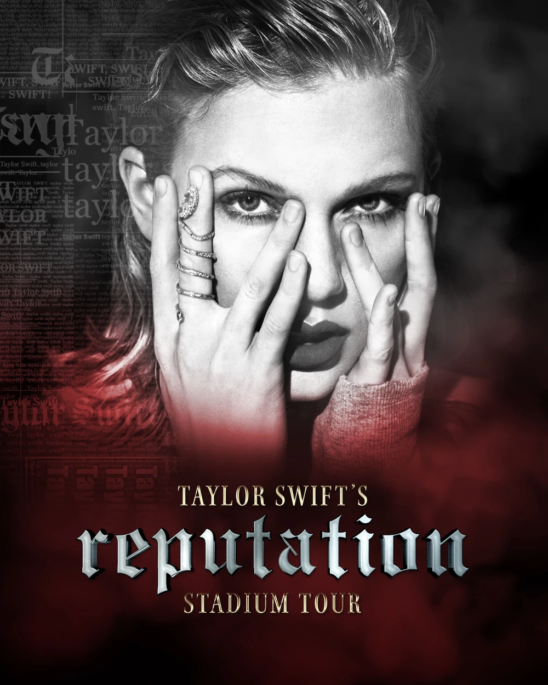
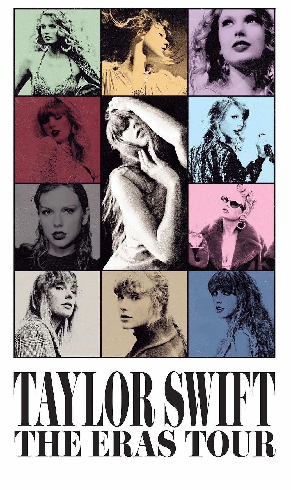

El Tour "Fearless" fue la primera gira de conciertos de la cantautora estadounidense Taylor Swift. La gira fue en apoyo de su segundo álbum de estudio, "Fearless" (2008). En el recorrido, estuvo acompañada de invitados Kellie Pickler y Gloriana. El cantante adolescente, Justin Bieber se unió a ella en la gira cuando fue al Reino Unido. Durante la gira, Taylor actuó con invitados como Juan Mayer, Faith Hill (22 de mayo de 2010) y Katy Perry (15 de abril de 2010).
Speak Now World Tour

Taylor mandando corazones en el poster del "Speak Now World Tour"
"Speak Now World Tour" es la segunda gira de conciertos de la cantautora de country estadounidense Taylor Swift, en apoyo de su tercer álbum de estudio, "Speak Now" (2010). La gira visitó Asia, Europa, América del Norte y Australia. Ocupó el décimo lugar en el "Top 50 Worldwide Tour (Mid-Year)" de Pollstar, recaudando más de 40 millones de dólares. Visitó 76 ciudades en 17 países y agotó las entradas en todas ellas.
Red Tour

Taylor posando para el poster del "Red Tour"
El "Red Tour" es la tercera gira mundial de conciertos de la cantante y compositora estadounidense Taylor Swift. La gira se lanzó en apoyo del cuarto álbum de estudio de Swift, Rojo (2012).
1989 World Tour

Taylor luciendo lentes oscuros en su poster del "1989 World Tour"
El "1989 World Tour" es la cuarta gira mundial de conciertos de la cantante y compositora estadounidense Taylor Swift. La gira se lanzó en apoyo del quinto álbum de estudio de Swift, 1989 (2014).
Se estima que 2,28 millones de fanáticos asistieron al concierto, recaudando más de $250 millones en todo el mundo en 50+ ciudades y convirtiéndola en una de las giras más taquilleras de ese año, si no la más.
Reputation Stadium Tour

Taylor con una impronta mas oscura en el "Reputation Stadium Tour"
El "Reputation Stadium Tour" es la quinta gira mundial de conciertos de la cantautora estadounidense Taylor Swift. Fue su primera gira por estadios. La gira se lanzó en apoyo del sexto álbum de estudio de Swift, "Reputation" (2017).
The Eras Tour

Todas las "Eras" de Taylor en una sola imagen
El "Eras Tour" fue la sexta gira mundial de conciertos de la cantautora estadounidense Taylor Swift. La gira sirvió para promocionar todos los álbumes de estudio de Swift, con énfasis en sus álbumes más recientes: Lover (2019), Folklore (2020), Evermore (2020), Midnights (2022) y The Tortured Poets Department (2024).